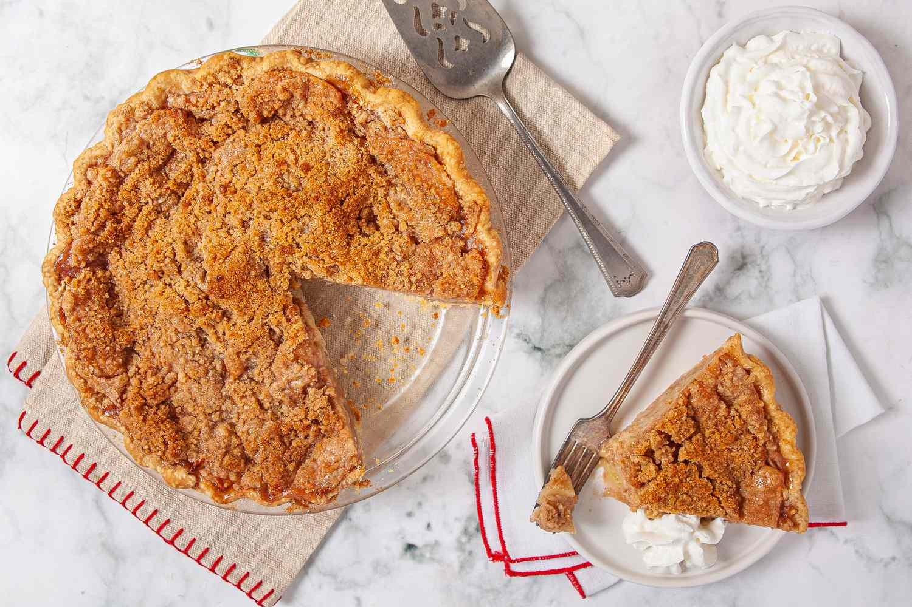

Apple Pie

Traditional Apple Pie
An apple pie is a fruit pie in which the main filling ingredient is apples.It is generally double-crusted, with pastry both above and below the filling.
Apple pie is often served with whipped cream, ice cream, custard or cheddar cheese.
Ingredients
- Dough for double-crust pie
- 1/3 cup sugar
- 1/4 cup all-purpose flour
- 6 to 7 cups thinly sliced peeled tart apples
- 1 tablespoon butter
- 1 large egg white
Steps
- Preheat oven to 375°.
- On a lightly floured surface, roll half the dough to a 1/8-in.-thick circle; transfer to a 9-in. pie plate and chill while preparing filling.
- In a small bowl, combine sugars, flour and egg. Add thinly sliced apple to mixture.
- Add filling to crust and dot with butter.
- Bake on the lowest rack for 60-70 minutes until crust is golden brown and filling is bubbly.
- Cool on a wire rack. If desired, serve with ice cream and caramel sauce.